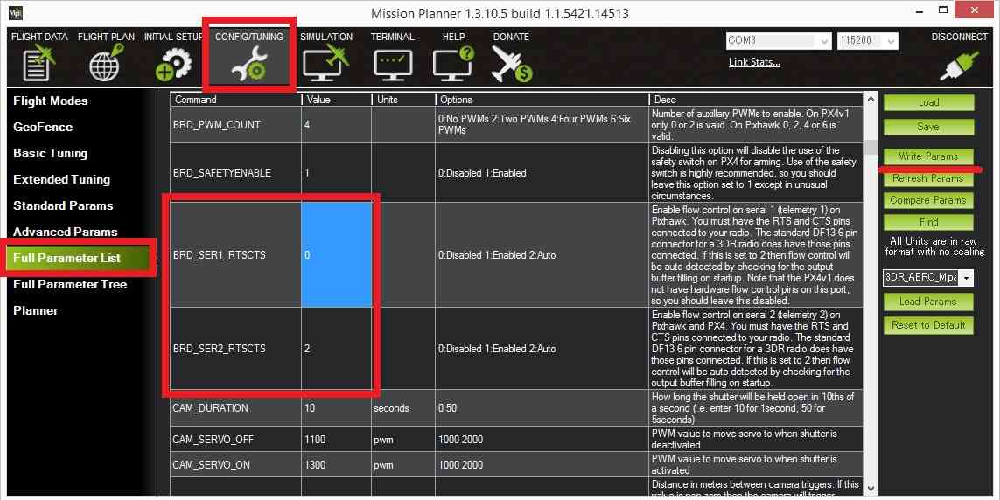
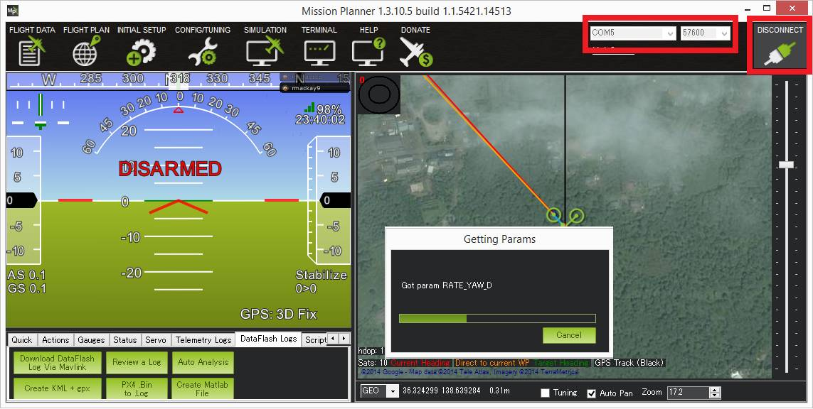

[copywiki destination=”plane,copter,rover,blimp”]¶
Telemetry-XBee¶
XBee radios (also known as ZigBee radios) are generally not recommended over the SiK Radio and RFD900 Radio. Still there may be some situations where only an XBee can be used so these high-level instructions could be helpful.

Where to Buy¶
XBee radios are available from Sparkfun and many other robotics stores globally. Generally you will need two XBee radiios (one for the ground station and one for the vehicle) along with two different adapter boards. One with a USB connection for the ground station computer and another with a serial connection which can be connected to the autopilot as shown above.
配置¶
Click on the diagram at the top of this page to see the individual wire connections that must be made between the autopilot and Xbee module. Note that in the diagram above only 4 wires are connected (GND, 5V, Transmit, Receiver). The CTS and RTS (Ready-to-send) pins are left unconnected because although connecting them should improve the data rate during the creation of this wiki page we were unable to successfully connect.
With the CTS and RTS pins disconnected the BRD_SER1_RTSCTS (if using Telem1) or BRD_SER2_RTSCTS (if using Telem2) should be set to zero (after making the change the autopilot will need to be restarted).
{kind=link}
The X-CTU application can be used to configure the XBee modules. In particular they should be set to transmit at 57600 baud.
The following parameters can be set in the XCTU application. In addition, it has a track record of use in XBee ZB（S2C）. Example of xbee setting parameters.(if. PC’s MAC:0013A2004567EFGH , Pixhawk’s xbee MAC:0013A2004567WXYZ)
Category |
Setting Parameter |
|
|---|---|---|
PC’s xbee |
Pixhawk’s xbee |
|
Networking |
ID=1234,SC=7FFF,SD=3,ZS=0,NJ=FF,NW=0,JV=[0], JN=[0],CE=[1],DO=0,DC=0 |
ID=1234,SC=7FFF,SD=3,ZS=0,NJ=FF,NW=0,JV=[0], JN=[0],CE=[0],DO=0,DC=0 |
Addressing |
DH=13A200,DL=4567WXYZ,NI=xbeepc,NH=30,BH=0, AR=FF,DD=A0000,NT=3C,NO=0,CR=3 |
DH=13A200,DL=4567EFGH,NI=xbeehawk,NH=30,BH=0, AR=FF,DD=A0000,NT=3C,NO=0,CR=3 |
ZigBee Addressing |
SE=E8,DE=E8,CI=11,TO=0 |
SE=E8,DE=E8,CI=11,TO=0 |
RF Interfacing |
PL=Highest[4],PM=Boost Mode Enabled[1] |
PL=Highest[4],PM=Boost Mode Enabled[1] |
Security |
EE=[0],EO=0,KY=0,NK=0 |
EE=[0],EO=0,KY=0,NK=0 |
Serial Interfacing |
BD=57600[6],NB=[0],SB[0],RO=3,D6=[0], D7=[0],AP=Transparent mode[0],AO=Native[0] |
BD=57600[6],NB=[0],SB[0],RO=3,D6=[0], D7=[0],AP=Transparent mode[0],AO=Native[0] |
AT Command Options |
CT=64,GT=3E8,CC=2B |
CT=64,GT=3E8,CC=2B |
Sleep Modes |
SP=20,SN=1,SM=No Sleep(Router)[0], ST=1388,SO=0,WH=0,PO=0 |
SP=20,SN=1,SM=No Sleep(Router)[0], ST=1388,SO=0,WH=0,PO=0 |
I/O Setting |
D0=Commissioning Button[1],D1=[0],D2=[0], D3=[0],D4=[0],D5=Associated indicator[1], D8=Sleep_Rq[1],D9=Awake/Asleep indicator[1], P0=RSSI PWM Output[1],P1=[0],P2=[0], P3=DOUT[1],P4=DIN[1],PR=1FBF,PD=1FFF,LT=0, RP=28 |
D0=Commissioning Button[1],D1=[0],D2=[0], D3=[0],D4=[0],D5=Associated indicator[1], D8=Sleep_Rq[1],D9=Awake/Asleep indicator[1], P0=RSSI PWM Output[1],P1=[0],P2=[0], P3=DOUT[1],P4=DIN[1],PR=1FBF,PD=1FFF,LT=0, RP=28 |
I/O Sampling |
IR=0,IC=0,V+=0 |
IR=0,IC=0,V+=0 |
Connecting to the Ground Station¶
If you’re using a USB adapter, simply connect it via a USB cable as shown:

If you’re using an XtreamBee adapter on the ground side, connect it to a FTDI cable as shown below and plug that into your USB port. The adapter should also be in Master mode.

XBee with XtreemBee Adapter¶
Once properly configured you should be able to connect to the vehicle from the ground station (i.e. Mission Planner) by selecting the appropriate COM port for the XBee and selecting the baud rate of 57600. If the connection is successful but the download of parameter stalls please see the notes above re CTS and RTS.
{kind=link}